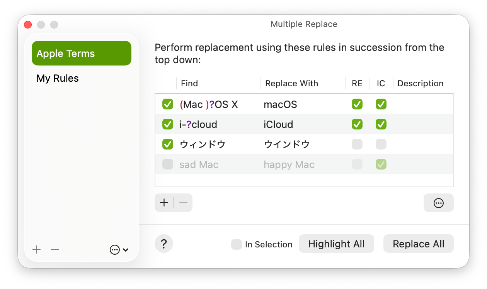
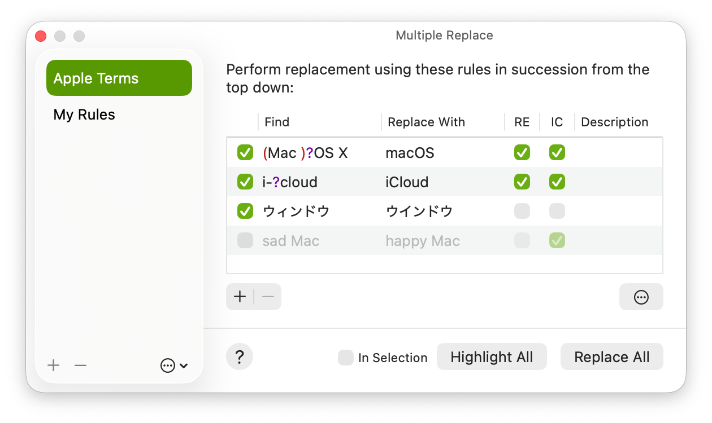

Use Multiple Replace window
Use the Multiple Replace window to manage and perform replacements in your document.
To open the Multiple Replace window:
Go to the CotEditor app
 on your Mac.
on your Mac.Choose Find > Multiple Replace.

With the Multiple Replace feature, you can apply multiple text replacements sequentially. Each set of replacement rules can be saved as a named preset and reused when needed.
Use the Multiple Replace window to manage and perform replacements in your document.
To open the Multiple Replace window:
Go to the CotEditor app  on your Mac.
on your Mac.
Choose Find > Multiple Replace.

The stored replacement definitions appear in the list on the sidebar.
In the sidebar, do any of the following:
Create a new definition: Click the Add - button at the bottom of the list.
Delete a definition: Select a definition in the list, then click the Delete - button at the bottom of the list.
Rename a definition: Select a definition in the list, then click it again.
More actions: Click at the bottom of the list.
You can export replacement definitions to transfer them to another computer.
Each definition is saved as a CotEditor replace definition file with the .cotrpl extension. The file content is written in JSON format.
Export: Select a definition in the list, then choose Export or Share from the Action menu.
Import: Drop replacement definition files into the list, or choose Import from the Action menu, then select the files to import.
You can also create a replace definition from a UTF-8–encoded TSV file in which each line contains a pair of search and replacement texts separated by tabs. To import this format, choose a file with the .tsv extension using the Import command. This format doesn’t support options such as case sensitivity or regular expressions. After importing a TSV file, configure any required options manually.
The definition selected in the list appears in the editor area on the right side. The replacement rules in the editor area are performed sequentially, from top to bottom.
Click the buttons below the editor area to perform multiple replacements.
Replace All: Perform all replacements for the current document.
Highlight: Highlight all matches in the current document.
Note: Highlighted matches may differ from the actual replacement results. This is because Replace All applies rules sequentially, and each rule is applied after the previous rules have already taken effect.
You can create and customize your own replacement definitions.
Click the Add + button at the bottom of the list on the left side to create a new replacement definition.
Click the Add + button in the editor area on the right side to create a new replacement rule.
Enter your replacement rule in the added row.
Changes save automatically as you work.
If a row contains an invalid rule, it is skipped when performing the replacement.
| Option | Description |
|---|---|
| (checkbox) | If the checkbox is unselected, the row is skipped. You can use this option to keep a replacement rule that is used depending on the situation. |
| Find | The text to search for. This field can’t be left empty. Empty rules are considered invalid and skipped. |
| Replace With | The text to replace with. If left empty, the matched text is removed. |
| RE | Search using regular expressions (abbreviation of Regular Expression). |
| IC | Ignore case when searching (abbreviation of Ignore Case). |
| Description | You can use this field to leave a comment about the rule. The description doesn’t affect the replacement. This field can be left blank. |
You can fine-tune the find behavior for the entire replacement definition in the Advanced options view. Those settings are also saved to your definition and apply to all rules within the definition.
Click the gear button in the Multiple Replace window, then click checkboxes as needed.
For details on each setting option, see Find or replace text.